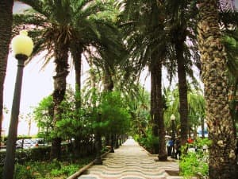
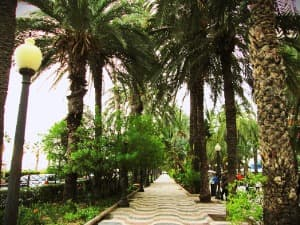
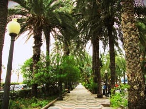
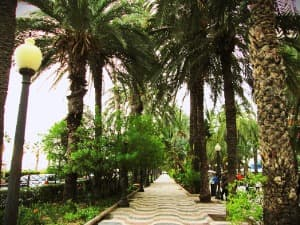
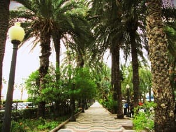

Luz verde a la poesía
Índice de poemas
Redes sociales muy poco sociales
Deseo
Me llaman idealista
Eres tú
Preciada compañera
Interminable espera
Despierta
Blanca dama
Repleto de indiferencia
El rayo que nunca cesa
Buen lugar de amores
Como dos gotas
A día de hoy, esperando sigo
Luz de primavera
Acerca de este proyecto
Alicante, siempre bella

 de noche")
 


